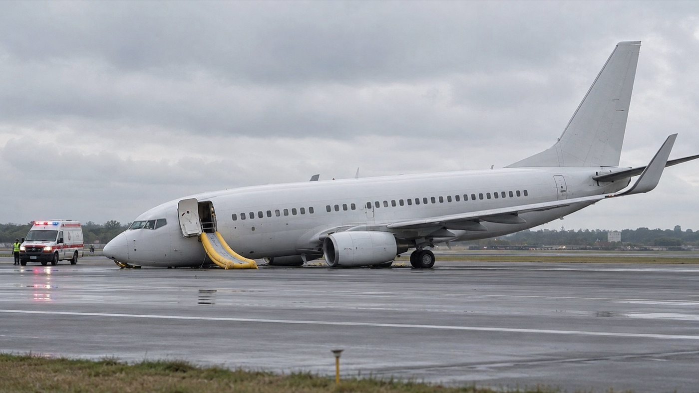

This lesson is built in the shape of the real exam, so nothing on test day is a surprise. Four sections on the day, about 30 minutes in all, recorded on a computer. The first three are trained in this lesson in their real format, with their real time limits. Section 4 — the two summaries — is below too, so nothing on the day is new.
Section
What happens
The clock
1 · Interview
Three general questions, then three work-related questions. Spontaneous, natural language on the general ones; accuracy and clarity on the work ones.
60 seconds per answer · about 8 minutes total. You may ask for a question to be repeated — once.
2 · Radio comprehension
Ten recorded pilot–controller exchanges, routine and non-routine. Each one has two multiple-choice questions: first “What do you understand?” (or a numbers question — flight levels, call signs, frequencies), then “What does [word] mean in this context?”
About 45 seconds of audio, then 15 seconds per question · about 9 minutes. One replay allowed per audio.
3 · The photographs
Five aviation photographs, six statements each. Exactly two are correct — the wrong ones are nearly right, so precision beats speed.
45 seconds per photograph · about 5 minutes. Answers can be changed until the clock ends.
4 · The summaries
Part 1: a short written report appears on the screen. Read it and take notes. Then it disappears, five key words appear, and you summarise the report aloud using all five words, unchanged. Part 2: listen to a radio exchange of about two minutes, taking notes, then summarise in your own words what happened — especially the unexpected turn.
Part 1: 90 seconds to read, 90 seconds to speak. Part 2: about 2 minutes of audio, then 45 seconds to speak. One replay allowed. About 7 minutes in all.
How the test is marked
Sections 2 and 3 are marked by the computer, and each one is pass or fail. Count your mistakes in each section: 0 mistakes → Level 6 is possible · up to 2 → Level 5 · up to 4 → Level 4 · 5 or more in either section → the whole test is failed.
Sections 1 and 4 are recorded and marked afterwards by two raters — an English expert and an air traffic professional — on six skills: pronunciation, structure, vocabulary, fluency, comprehension and interaction.
Your final level is your lowest skill, not your average. One weak area decides the result — so no section can be ignored.
The four ways candidates lose marks — all avoidable:
Section 1: answering an easy question with ten words and thirty seconds of silence. The clock is 60 seconds — fill it.
Section 2: hearing the situation but missing the small word that decides the answer — may, unless, about to, or one digit in a call sign.
Section 3: choosing a statement that is almost true of the photo. “The tyres are flat” is wrong if only one tyre is flat.
Section 4: changing a key word (“recommend” instead of “recommended”) or leaving one out. The five words must all appear, exactly as given.
Warm up — the 60-second muscle
The single most useful habit for Section 1: never stop before the minute is up. Practise now on an easy one: “What kind of place is your work environment?” Speak until the timer says stop.
01:00
Words in context — the vocabulary question, in its real format
Every audio in Section 2 ends the same way: “What does [word] mean in this context?” — three options, 15 seconds. The words are everyday radio English, not technical jargon, and the wrong options always sound related. Train the reflex here: read the line, start the 15-second timer, answer before it dies.
The trick the test plays: the three options are often near-synonyms in some context — just not this one. “Towed” can feel like “pulled”, but a broken-down van that is towed away is simply removed. Always ask: what does the word do in this sentence?
Eight rounds — 15 seconds each
1. 00:15 “Ground, our forward cargo door is jammed — the handlers are working on it.” — Jammed means…
2. 00:15 “Be advised your clearance expires at four five.” — Expires means…
3. 00:15 “We are marginally high on the profile, request one orbit to lose altitude.” — Marginally means…
4. 00:15 “We hear peculiar sounds from the number two engine, request to hold for troubleshooting.” — Peculiar means…
5. 00:15 “The hijackers are threatening to act unless we take off immediately.” — Unless means…
6. 00:15 “The inspection vehicle is about to vacate the runway.” — About to means…
7. 00:15 “My co-pilot has sorted out the problem — the missing document was mixed up with the charts.” — Sorted out means…
8. 00:15 “We are overdue for our turnaround — which number in sequence are we?” — Overdue means…
Speak — own the words (90 seconds)
Pick any four of the eight words and use each one in a sentence about your airport — a jammed door you remember, a report that was overdue, a peculiar reading on an instrument. Making the word yours is what makes it stick.
01:30
Interview gym — Section 1, at full test pressure
The real section is three general questions, then three work questions — 60 seconds each, one repeat allowed. Run each triplet below as a set: read the question aloud, start the timer, and do not stop until it ends. The answer-building techniques are in Lesson 1 and Lesson 2; this is where they meet the clock.
Triplet 1 — the general questions
1. How would you describe your job?
01:00
2. When did you decide to choose a career in the field of aviation?
01:00
3. What advice would you give to a young person who wanted to do this job?
01:00
Triplet 2 — the work questions
4. How do adverse weather conditions affect flights?
01:00
One shape: name three different hazards and give each a consequence — “Low visibility slows everything down, because… Strong crosswinds can force a go-around, and… Icing is the quiet one, since…” Three hazards × two sentences each = a full, organised minute.
5. What would you do if communication with the other party failed?
01:00
One shape: steps in order — “First I would try… If that failed, I'd switch to… Meanwhile, the other station would expect… And the whole time, the priority is…” A procedure told in sequence words is automatically fluent-sounding.
6. Why is it necessary to be continuously updated in your work?
01:00
One shape: reason + example + consequence of failing — “Because the situation changes by the minute… For example, last winter… And if you work from old information, the risk is…”
When the question is about controllers
Many work questions in this test are written for air traffic controllers: “What methods do controllers use to avoid errors?” You work in weather, not in the tower yet — but you work beside controllers every day, and you are preparing to become one. That is your answer's way in: say what you see from your position, then what you know controllers do.
7. What methods do air traffic controllers use to avoid errors?
01:00
One shape: your position + what controllers do + why it matters to you — “In my job I work closely with the tower, so I see this every day… Controllers insist on a full readback, and they use standard phraseology so there is only one meaning… They also double-check anything unusual, and they hand over carefully at the end of a shift… This matters to me, because I hope to become a controller myself.”
8. How would an air traffic controller assist an aircraft in an emergency situation?
01:00
One shape: steps in order, then the weather link — “First, the controller would listen and confirm the problem… Then they would give the aircraft priority and clear the airspace around it… They would alert the fire and rescue services… And they would pass on the latest weather — wind, visibility, runway conditions — which is exactly the information my office provides.”
The one-repeat rule, used well: you may ask for a question to be repeated once. Use it the professional way — “Could you repeat the question, please?” — and use the repeat time to plan your first sentence. Asking well costs nothing; answering the wrong question costs everything.
Radio comprehension — Section 2, dialogue by dialogue
Four fresh exchanges in the test's two styles: routine (the questions hunt numbers — call signs, flight levels, frequencies) and non-routine (the questions hunt meaning — what exactly has gone wrong, and how bad is it?). In the test, the two questions are on the screen while the recording plays — so for each one, read both questions first, then press Listen and don't look at the words. Then answer both questions — press Go to start each 15-second clock. You can listen one more time, like the one replay in the test. When you've answered, open the script to check.
Where the traps live: similar digits in two call signs (382 and 328), may / must / can't, gain / loss, from / until, and modest words for big problems (“a slight issue”). Section 2 is not a vocabulary test — it is a precision test.
Dialogue 1 — routine: two aircraft, similar numbers
TWR: Corvet 3 8 2, runway 24, cleared for take-off, wind 230 degrees, 8 knots. After departure contact Approach 1 2 4 decimal 3 5 0. P1: Cleared for take-off runway 24, after departure Approach 1 2 4 decimal 3 5 0, Corvet 3 8 2. TWR: Bilton 3 2 8, hold short runway 24, departing traffic. P2: Holding short runway 24, Bilton 3 2 8. TWR: Bilton 3 2 8, line up runway 24 and wait, expedite — landing traffic on 6 mile final.
A. 00:15 — Which aircraft is holding short of runway 24?
B. 00:15 — What does expedite mean in this context?
Dialogue 2 — non-routine: something hit on departure
P: Tower, Selva 6 1, we think we flew through a flock of birds just after rotation. Engine readings look normal, but as a precaution we would prefer to come back and have the aircraft looked at. TWR: Selva 6 1, roger — are you declaring an emergency, or requesting a normal return? P: Negative emergency, a normal return is fine. The engines are running smoothly, we just want maintenance to inspect them, Selva 6 1. TWR: Selva 6 1, understood, join left downwind runway 06, number one, and the airfield inspection will check the runway for debris.
A. 00:15 — What do you understand?
B. 00:15 — What does as a precaution mean in this context?
Dialogue 3 — non-routine: the weather closes in
P: Tower, Nordica 4 4 5, 8 mile final, request latest visibility. TWR: Nordica 4 4 5, visibility is deteriorating rapidly — currently 1,200 metres in fog, and the last three readings have each been lower than the one before. Runway 06, cleared to land, wind calm. P: Cleared to land runway 06, copied the visibility — if it drops below our minimum we will go around and divert, Nordica 4 4 5. TWR: Nordica 4 4 5, roger, your alternate airfield is reporting good visibility, advise if diverting.
A. 00:15 — What do you understand?
B. 00:15 — What does deteriorating mean in this context?
Dialogue 4 — routine turning non-routine: slow to vacate
TWR: Almar 9 0 2, runway 15, cleared to land, wind 170 degrees, 10 knots. P1: Cleared to land runway 15, Almar 9 0 2. TWR: Tandel 5 7, continue approach, runway 15, preceding traffic will vacate shortly. P2: Continuing approach, Tandel 5 7. TWR: Tandel 5 7, go around, I say again, go around — the preceding aircraft has missed the exit and is still on the runway. P2: Going around, Tandel 5 7.
A. 00:15 — Why did Tandel 5 7 go around?
B. 00:15 — What does vacate mean in this context?
Speak — the summary reflex (90 seconds)
Choose one of the four dialogues and summarise the whole situation aloud in your own words — what happened, who did what, and how it ended — as if briefing a colleague who just walked in. This is exactly the retelling skill from Lesson 4, pointed at the test.
01:30
The photo task — six statements, exactly two are true
Section 3 shows five aviation photographs, each with six sentences and 45 seconds on the clock. Two are correct; the other four are nearly correct — the wrong detail, the wrong side, the wrong number, or something that simply isn't visible. Study each scene below, click the two statements you believe, then check. The discipline: only choose what you can actually see.
Scene 1
Choose the two sentences that best describe the scene, then check.
The near-misses: (a) only the left engine shows smoke — “both” kills the sentence; (c) no tug is attached — attending is not towing; (e) no slides are visible — you cannot choose what you cannot see; (f) the runway is dry — the white on the ground is foam, not snow. This is the whole skill of Section 3: every wrong option dies on one precise word. And why (b) is right:left always means the aircraft's own left. The nose is pointing towards you, so the aircraft's left engine is the one on the right of the photo.
Scene 2

Choose the two sentences that best describe the scene, then check.
The near-misses: (a) the aircraft is on the runway, not the grass; (c) there is no fire at all — the dramatic option is bait; (e) it is the nose that is on the runway — the tail is high in the air, so the right idea on the wrong part of the aircraft makes this sentence wrong; (f) an ambulance is clearly attending. Notice the pattern: wrong location, invented drama, wrong component, and a negative contradicted by the picture.
Then describe it properly (2 minutes)
Choose either scene and describe it aloud the professional way: what has happened, the position of the aircraft, who is attending, and what you would expect to happen at this airfield in the next thirty minutes. Use the state language — deployed, attending, occupied, has been closed, seems undamaged.
02:00
Mini mock — one task from every section, on the real clocks
The real test is about 30 minutes: six interview questions, ten recordings, five photographs and two summaries. This run gives you a piece of each, in the real order and on the real clocks — about ten minutes. No pausing between tasks, and the timers are the law.
What is stressful about your work environment — and how do you deal with it?
01:00
How do you think your job might change in the future?
01:00
Section 2 — One recording, two questions
Read both questions first, then press Listen. One replay, as in the test.
P: Ground, Vetra 2 0 4, we may be unable to push back — the handler reports a problem with the tow bar. If they can't fix it quickly we might shut down to save fuel. GND: Vetra 2 0 4, roger, report when ready. Be advised your slot expires at 2 5 — if you miss it, expect a delay of about forty minutes. P: Understood, the mechanics say it is nearly sorted out — we expect to be ready in five minutes, Vetra 2 0 4.
A. 00:15 — What do you understand?
B. 00:15 — What does slot mean in this context?
Section 3 — One photograph, 45 seconds
A new photo. Start the clock, choose the two correct sentences, and check before the clock ends.
00:45 — Choose the two sentences that best describe the photo.
The near-misses: (a) the catering truck, with its box raised, is at the rear door, under the tail end of the wing — wrong place; (c) there is no fuel truck anywhere in the photo — you cannot choose what you cannot see; (e) there are two workers in orange vests at the belt loader — wrong number; (f) nothing is attached to the nose gear — only a cone stands near it.
Section 4 — Summarise a report with five key words
As in the test: read the report for 90 seconds and take notes. Then hide it. Five key words appear — summarise the report aloud in 90 seconds, using all five words exactly as they are written.
Step 1 — read (90 seconds)
01:30
During the early morning inspection of runway 16, the airfield operations team found a large area of loose rubber near the touchdown zone. The runway was closed for twenty minutes while a sweeper vehicle removed the debris. Two arriving flights were told to hold, and one of them, which was low on fuel, was given priority as soon as the runway reopened. The first pilot to land afterwards reported good braking action, although the surface was still wet after the night's rain. The operations manager later recommended that rubber removal should be carried out more often during the summer months.
Step 2 — summarise (90 seconds)
inspectionclosedholdpriorityrecommended
01:30
Self-check
The test rewards exactly what your job already demands: full answers, precise listening, and claims you can see with your own eyes. Train those three and the format holds no surprises.